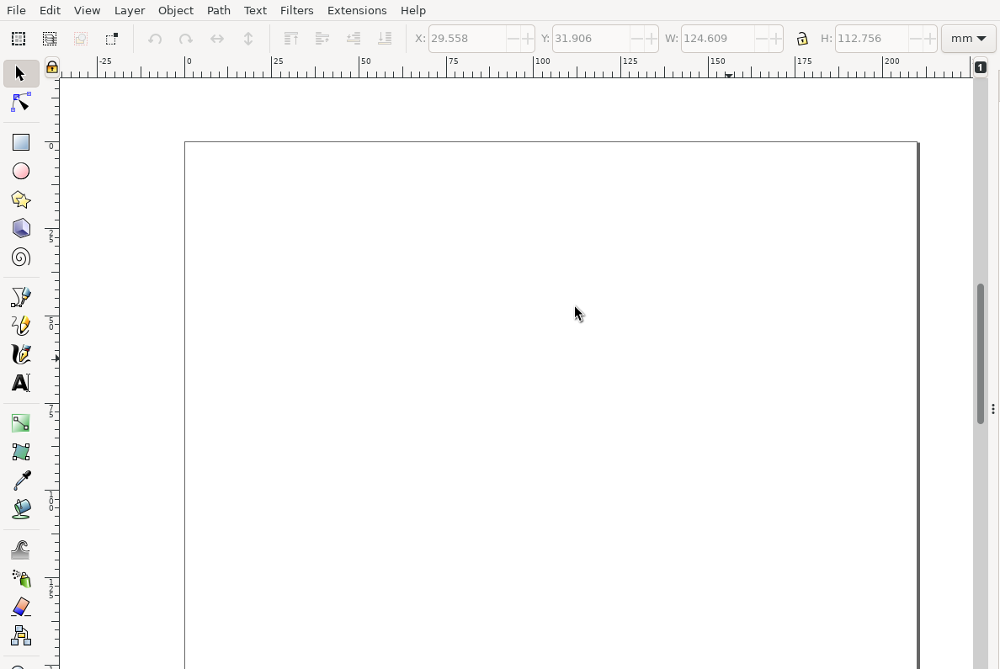

figure_second documentation
Installing
$ pip3 install figure_second
Workflow
Starting with an empty document in inkscape:
draw some rectangles with the Create Rectangles and Squares Tool (R):
right click on one rectangle and select Object Properties.... This will bring a pane up like this:
set the ID field to a memorable name, and click Set at the bottom of the panel. For this example,
the three rectangles are named A B and C. Save the inkscape file to disk - I chose the name simple.svg.
The generated xml for simple.svg will contain something like this for the three rectangles:
<g
inkscape:label="Layer 1"
inkscape:groupmode="layer"
id="layer1">
<rect
style="fill:#ff0000;fill-opacity:1;stroke-width:0.31918"
id="A"
width="41.506653"
height="53.083206"
x="29.557634"
y="31.906368" />
<rect
style="fill:#ff0000;fill-opacity:1;stroke-width:0.419872"
id="B"
width="78.799866"
height="53.08321"
x="75.366898"
y="31.906368" />
<rect
style="fill:#ff0000;fill-opacity:1;stroke-width:0.372622"
id="C"
width="124.60913"
height="55.065285"
x="29.557634"
y="89.596893" />
</g>
Here we can see that the values we selected for each ID field have been stored in the .svg file.
This is important - figure_second used these identifiers to find the correct element in the file to update
to your figures, as well as supplying you with its dimensions.
Lets now move to python. Start by initalizing an Updater object by specifying the path to your template file
of rectangles, and an output path:
import figure_second
up = figure_second.Updater("./simple.svg", "./simple-output.svg")
next we will create some sample data to plot on the axes:
x = np.linspace(0, 2*pi, 100)
y_A = np.cos(x)
y_B = np.sin(x)
y_C = np.cos(x)
then create some figures for each one. Lets use a helper function to reduce code repetiton:
def plot_xy_fig(x,y, inkscape_id: str) -> Figure:
fig = Figure()
ax = fig.subplots()
ax.plot(x,y)
# title each plot with its inkscape id
ax.set_title(inkscape_id)
return fig
Then, lets create a python dictionary that maps the inkscape IDs we have chosen
to matplotlib Figure objects:
mapping = {
"A": plot_xy_fig(x, y_A, "A"),
"B": plot_xy_fig(x, y_B, "B"),
"C": plot_xy_fig(x, y_C, "C"),
}
and plot the result with
figure_second.plot_figs(up, mapping, bbox_inches="tight")
If we go back to inkscape and open the newly generated ./simple-output.svg, we will see something like this:
Notice that, while figure_second has placed the plots in the inkscape svg, it has made no attempt to fix the aspect
ratio problems that have arisen. figure_second only provides a minimal api to the underlying svg information,
so its up to the user to fix this. Luckily, the Updater.dimensions() method can provide data on what width
and height attributes are detailed in the svg file.
We can use Updater.relative_dimensions() to calculate the dimensions in inches (matplotlib units) for a given
desired figure height. This way, the width and height will preserve the original aspect ratio of the inkscape rectangles.
Adjusting our plot_xy_fig function:
def plot_xy_fig(x,y, inkscape_id: str) -> Figure:
# height in inches of the figure
height = 4.
# .relative_dimensions returns a tuple of (width, height) information
# that we can send directly to matplotlib
dims = up.relative_dimensions(inkscape_id, height)
fig = Figure(figsize=dims)
# title each plot with its inkscape id
ax.set_title(inkscape_id)
ax.plot(x,y)
return fig
Running the code again, we dont actually need to close and reopen the file. Instead, go to File > Revert to
reload the svg automatically. The final result is (with also showing inkscape bounding boxes on the figures):